HPC Notebook¶
在做 PAC 比赛时第一次接触了 HPC ，由于只上了一个短学期，相关知识极度匮乏，优化根本无从下手。为此，我认为有必要系统性的补全相关的知识，做一些相关的积累，这对日后的计科学习想必也是大有裨益的。
这个 notebook 一方面记录 HPC 的相关知识，另一方面也是一个学习路径的记录。最为一个完全的小白，从zhb处得到建议，决定以Bowling's TechStack为指导框架，往里面填充知识；同时该文档也是一个起点，向外发散拓展。
直接盗用 Bowling 的结构图和优化框架：
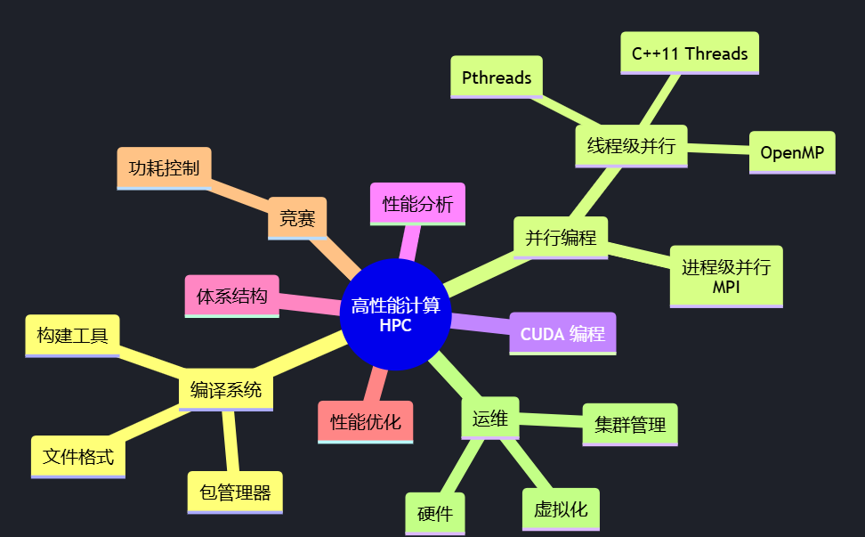
优化主要在两个层面进行：代码层面和运行层面。
代码优化 - 三大并行编程模型 - MPI - OpenMP - CUDA - 常见实现、编译器和工具链对应的优化策略 - GCC（OpenMPI） - Intel（Intel MPI） - NVIDIA（NVCC）
代码优化的目标是编写具有可扩展性的代码。可扩展性是指，随着计算资源的增加，代码的性能也能够线性（甚至更好地增长）。在不考虑实现的阶段，我们需要按照对应编程模型的最佳实践编写代码。在考虑实现的阶段，我们需要根据实现的特点和硬件架构的特点，针对性地优化代码，比如采用特定的指令集等。
运行优化 - CPU 计算（MPI） - 绑核 - 节点、进程、线程拓扑 - GPU 计算 - SM、Warp 调度
运行优化一定程度上是不断的尝试，探索在如何最大化利用硬件资源。
由于开始这个文档的时间正好是Lab3即将开始的时候，所以我们先从 CUDA 开始
CUDA¶
GPU & SPMD¶
Where are we?
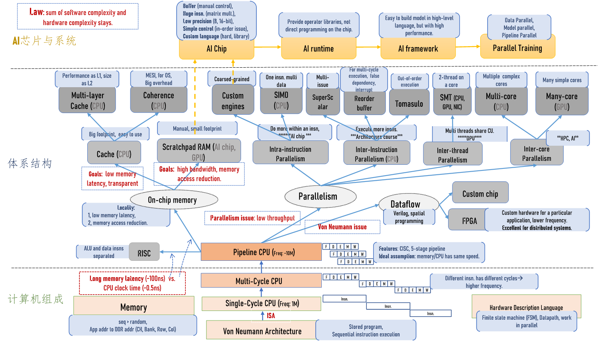
Why GPU? Need More Computing Power.
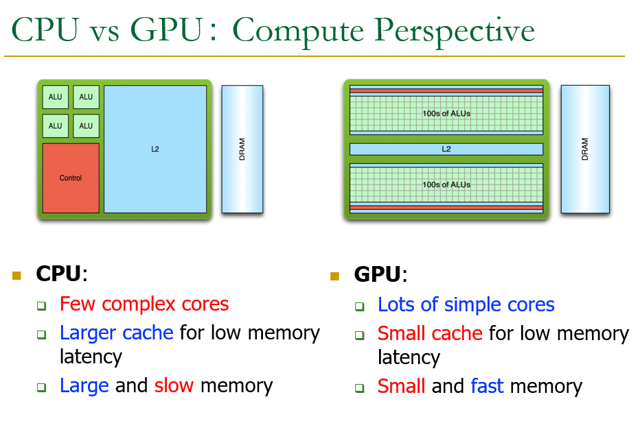
特别有趣的图片解释了 CPU 与 GPU 之间的关系
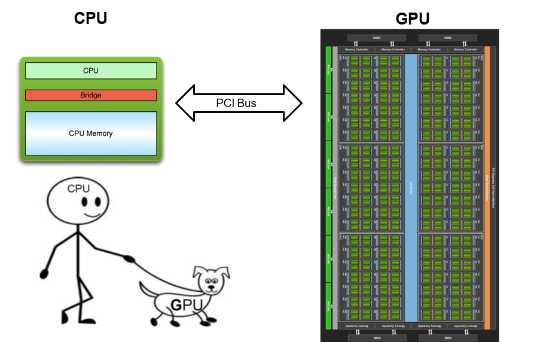
GPU 只是一个计算工具，依旧需要在 CPU 的指令下工作
More cores -> More trouble
How to manipulate them?
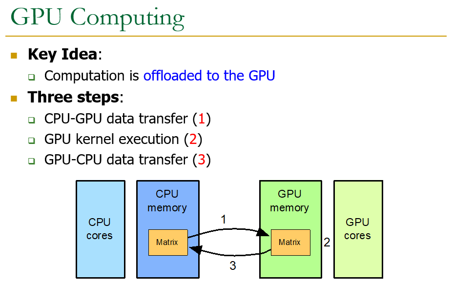
CPU-GPU Co-processing: - CPU: Sequential or modestly parallel sections - GPU: Massively parallel sections
The instruction pipeline operates like a SIMD pipeline (e.g., an array processor). However, the programming is done using threads, NOT SIMD instructions
First, let’s distinguish between - Programming Model (Software) vs. - Execution Model (Hardware)
Programming Model： how the programmer expresses the code E.g., Sequential (von Neumann), Data Parallel (SIMD), Dataflow, Multi-threaded (MIMD, SPMD), …
Hardware Execution Model： how the hardware executes the code underneath E.g., Out-of-order execution, Vector processor, Array processor, Dataflow processor, Multiprocessor, Multithreaded processor, …
Execution Model can be very different from Programming Model E.g., von Neumann model implemented by an OoO processor E.g., SPMD model implemented by a SIMD processor (a GPU)
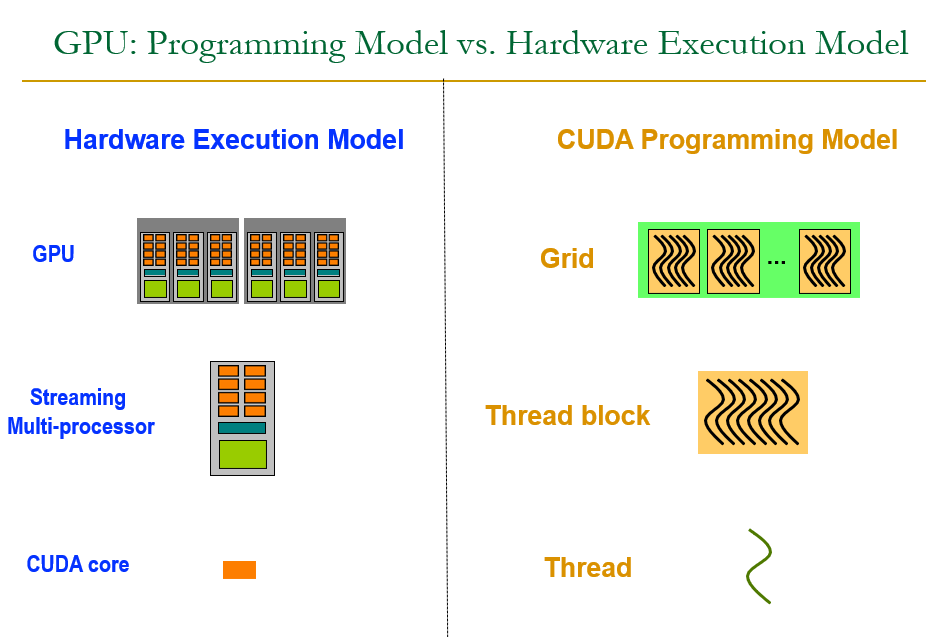
NVIDIA A100 & NVIDIA H100

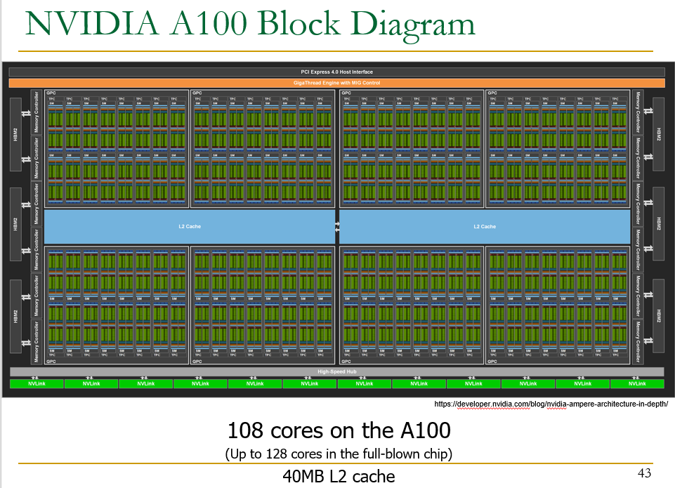
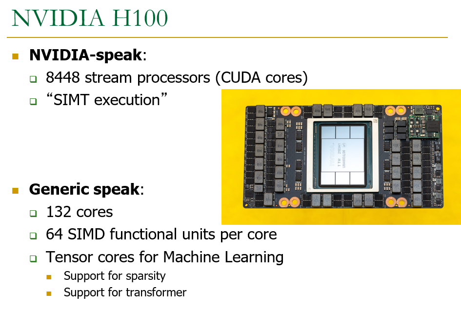
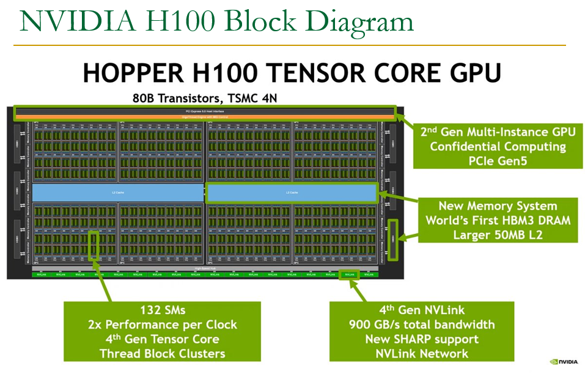
GPU Trend H100 vs. A100
Compute power scales well.
GPU memory capacity does not scale well.
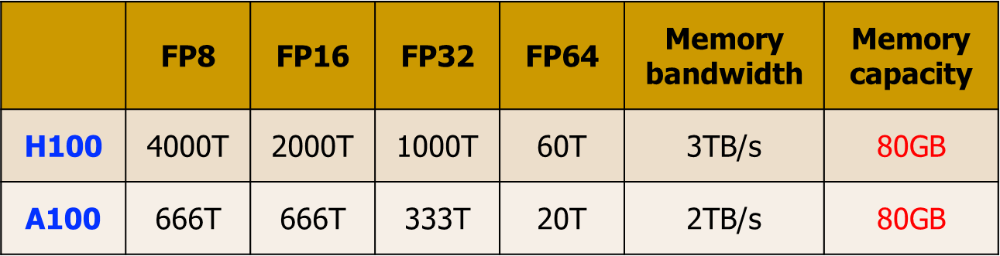
A GPU is a SIMD (SIMT) Machine，Except it is NOT programmed using SIMD instructions
It is programmed using threads (SPMD programming model) - Each thread executes the same code but operates a different piece of data - Each thread has its own context (i.e., can be treated/restarted/executed independently)
SISD vs. SIMD vs. SPMD
How Can You Exploit Parallelism Here?
Let’s examine three programming options to exploit instruction-level parallelism present in this sequential code: - Sequential (SISD) - Data-Parallel (SIMD) - Multithreaded (SPMD)
Prog. Model 1: Sequential (SISD)
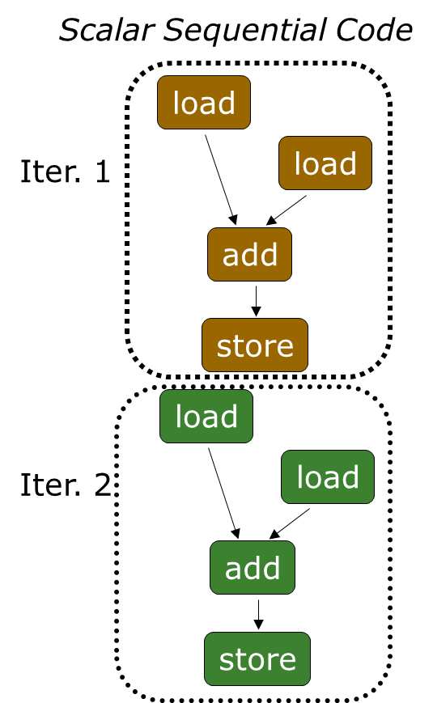
Can be executed on thee processors: - Pipelined processor - Out-of-order execution processor - Independent instructions executed when ready - Different iterations are present in the instruction window and can execute in parallel in multiple functional units - In other words, the loop is dynamically unrolled by the hardware - Superscalar or VLIW processor Can fetch and execute multiple instructions per cycle
Prog. Model 2: Data Parallel (SIMD)
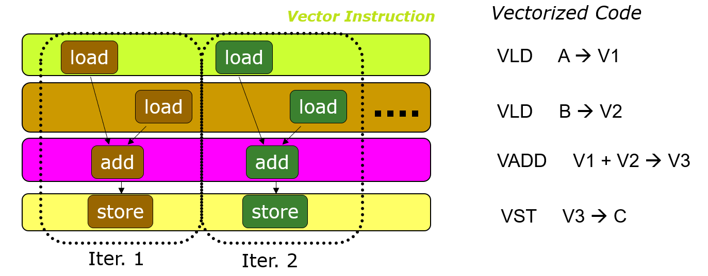
- Realization: Each iteration is independent
- Idea: Programmer or compiler generates a SIMD instruction to execute the same instruction from all iterations across different data
Prog. Model 3: Multithreaded
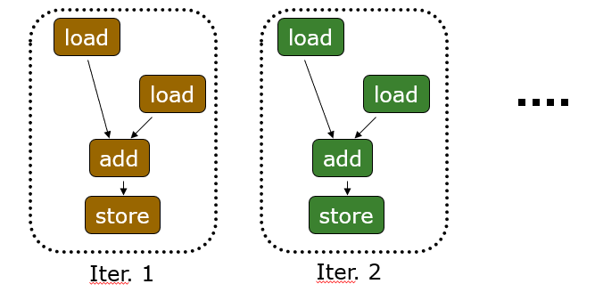
- Realization: Each iteration is independent
- Idea: Programmer or compiler generates a thread to execute each iteration. Each thread does the same thing (but on different data)
This programming model (software) is called:
SPMD: Single Program Multiple Data
- This is a programming model rather than computer organization
- Each processing element executes the same procedure, except on different data elements
- Procedures can synchronize at certain points in program, e.g. barriers
Key Idea of SPMD: multiple instruction streams execute the same program
- Each program/procedure
- works on different data,
- can execute a different control-flow path, at run-time
- Many scientific applications are programmed this way and run on MIMD hardware (multiprocessors)
- Modern GPUs programmed in a similar way on a SIMD hardware
接下来的部分将参照 NVIDIA 深度学习培训中心（DLI）实战培训课程计算加速基础——C
在官方教程中使用了 jupyter 交互式笔记本和云端的 NVIDIA GPU 的加速系统。我的电脑上居然也有一块 NVIDIA GEFORCE RTX，所以我想尝试在我的电脑复现。

使用 CUDA C/C++ 加速应用程序¶
CUDA 提供一种可扩展 C、C++、Python 和 Fortran 等语言的编码范式，能够在世界上性能超强劲的并行处理器 NVIDIA GPU 上运行大量经加速的并行代码。CUDA 可以毫不费力地大幅加速应用程序，具有适用于 DNN、BLAS、图形分析 和 FFT 等的高度优化库生态系统，并且还附带功能强大的 命令行 和 可视化分析器。
加速系统¶
加速系统又称异构系统，由 CPU 和 GPU 组成。加速系统会运行 CPU 程序，这些程序也会转而启动将受益于 GPU 大规模并行计算能力的函数。
可以使用 nvidia-smi (Systems Management Interface) 命令行命令查询有关此 GPU 的信息。
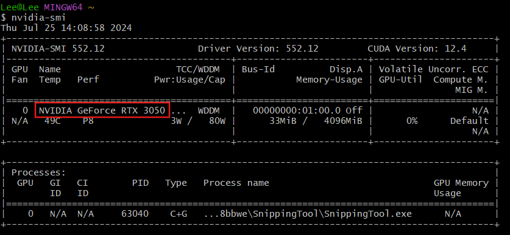
由GPU加速的还是纯CPU的应用程序¶
在 CPU 应用程序中，数据在 CPU 上进行分配，并且所有工作均在 CPU 上进行。
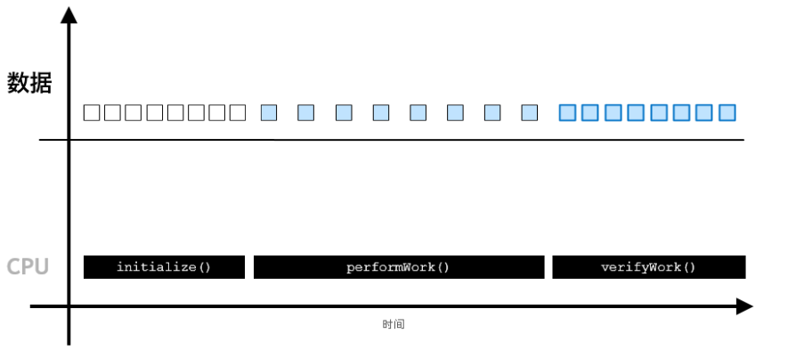
而在加速应用程序中，则可以使用 cudaMallocManaged() 分配数据，其数据可由 CPU 进行访问和处理，并能自动迁移至可执行并行工作的 GPU；GPU 异步执行工作，与此同时 CPU 可执行它的工作；通过 cudaDeviceSynchronized，CPU 代码可与异步 GPU 工作实现同步，并等待后者完成；经 CPU 访问的数据将会自动迁移。
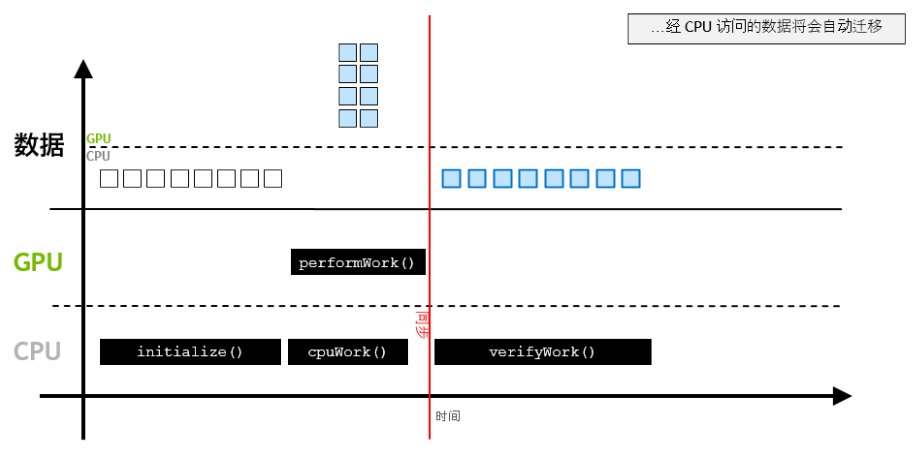
为GPU编写应用程序代码¶
CUDA 为许多常用编程语言提供扩展。这些语言扩展可让开发人员在 GPU 上轻松运行其源代码中的函数。
要复现文档中的 CUDA 程序，需要安装CUDA Toolkit。
显然 CUDA 是可以配置在 VS Code 上的，但鬼知道我找了多少教程配置了多久，总之最后成功在 Visual Studio 2022 上配置成功。具体参考 Youtube Vidio。这样配置可以成功编译运行，但对于 CUDA 中的特有语法会有红色波浪下划线报错，可以参考知乎文章简单去除一下（只要把里面的“禁用波浪曲线”置为 True 就可以了）。
先来看一个 .cu 文件
对比普通的 C 程序，CUDA 代码有些不同之处
__global__ void GPUFunction()
- __global__ 关键字表明以下函数将在 GPU 上运行并可全局调用，而在此种情况下，则指由 CPU 或 GPU 调用。
- 通常，我们将在 CPU 上执行的代码称为主机代码，而将在 GPU 上运行的代码称为设备代码。
GPUFunction<<<1, 1>>>();
- 通常，当调用要在 GPU 上运行的函数时，我们将此种函数称为已启动的核函数。
- 启动核函数时，我们必须提供执行配置，即在向核函数传递任何预期参数之前使用 <<< ... >>> 语法完成的配置。
- 在宏观层面，程序员可通过执行配置为核函数启动指定线程层次结构，从而定义线程组（称为线程块）的数量，以及要在每个线程块中执行的线程数量。稍后将在本实验深入探讨执行配置，但现在请注意正在使用包含 1 线程（第二个配置参数）的 1 线程块（第一个执行配置参数）启动核函数。
cudaDeviceSynchronize();
- 与许多 C/C++ 代码不同，核函数启动方式为异步：CPU 代码将继续执行而无需等待核函数完成启动。
- 调用 CUDA 运行时提供的函数 cudaDeviceSynchronize 将导致主机 (CPU) 代码暂作等待，直至设备 (GPU) 代码执行完成，才能在 CPU 上恢复执行。
练习：编写一个Hello GPU核函数¶
01-hello-gpu.cu
编译并运行加速后的CUDA代码¶
CUDA 平台附带 NVIDIA CUDA 编译器 nvcc，可以编译 CUDA 加速应用程序，其中包含主机和设备代码。
使用 nvcc 编译和用 gcc 非常类似。但尝试在 VS 的 Terminal （默认 PowerShell）上使用命令行
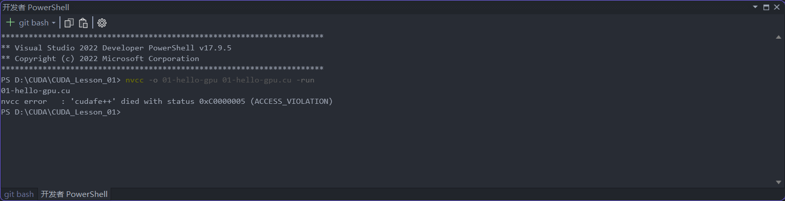
该错误难以解决，网上也没有找到什么好的解决办法。所以我直接使用了git bash ，效果不错。对于报错 nvcc fatal : Cannot find compiler 'cl.exe' in PATH ，可以参考 CSDN。
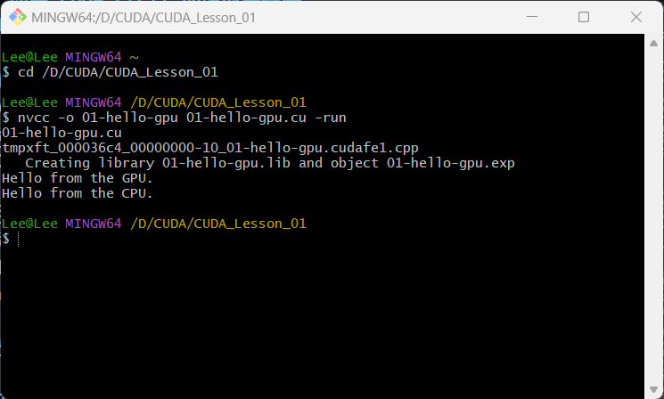
当然其实不一定要用命令行编译运行，在 VS 中可以直接 build 和 run without debugging 。
CUDA的线程层次结构¶
GPU 在线程中执行工作，多个线程并行运行。线程的集合称为块。与给定核函数启动相关的块的集合称为网格。GPU 函数称为核函数，核函数通过执行配置启动，执行配置定义了网格中的块数以及每个块中的线程数。网格中的每个块均包含相同数量的线程。
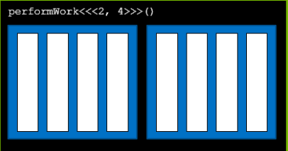
启动并行运行的核函数¶
执行配置可以指定线程组（称为线程块或简称为块）数量以及其希望每个线程块所包含的线程数量。执行配置的语法如下：
CUDA 提供的线程层次结构变量¶
在核函数定义中，CUDA 提供的变量描述了它所执行的线程、块和网络。
gridDim.x 是网格中的块数。
blockIdx.x 是网格中当前块的索引。
threadIdx.x 描述了块中所包含线程的索引
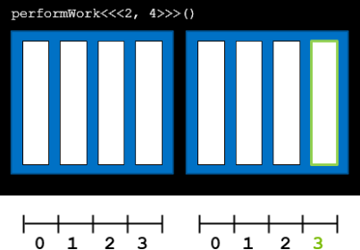
线程和块的索引¶
每个线程在其线程块内部均会被分配一个索引，从 0 开始。此外，每个线程块也会被分配一个索引，并从 0 开始。正如线程组成线程块，线程块又会组成网格，而网格是 CUDA 线程层次结构中级别最高的实体。简言之，CUDA 核函数在由一个或多个线程块组成的网格中执行，且每个线程块中均包含相同数量的一个或多个线程。
练习：使用特定的线程和块索引¶
01-thread-and-block-inx.cu
加速 for 循环¶
对于一个最普通的 for 循环
练习：使用单个线程加速 for 循环¶
01-single-block-loop.cu